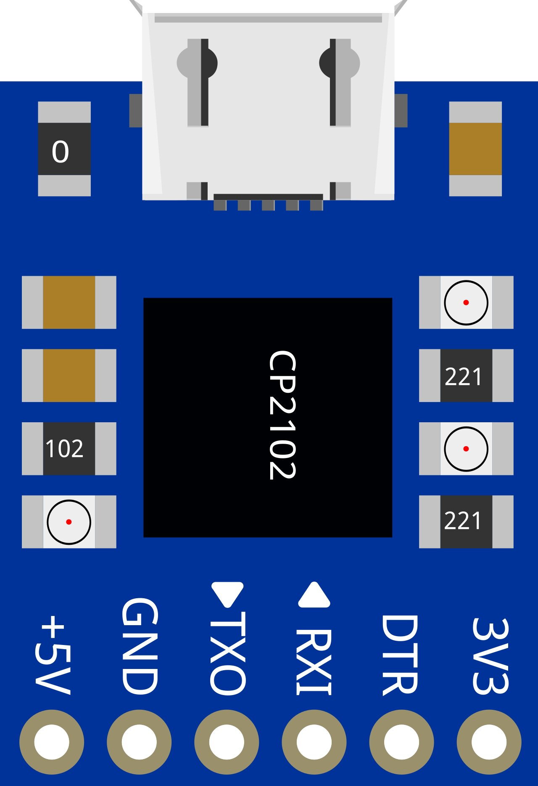
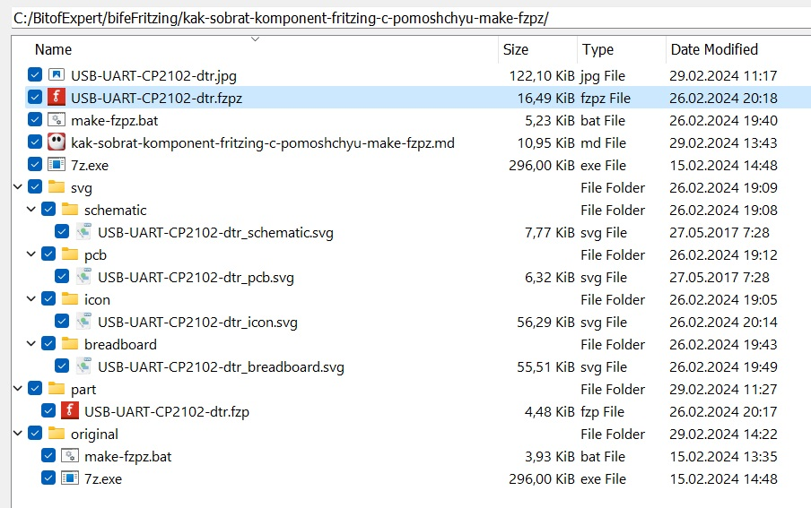

При работе со Fritzing может случится так, что для проекта (или, например, для передачи другому пользователю) вам нужен готовый компонент, а у вас его нет, но есть его составляющие файлы изображений .svg и файл структуры компонента .fzp. В этом случае можно воспользоваться командным файлом make-fzpz.bat.
Для того чтобы понять, как это можно сделать, разберем пример сборки компонента USB UART преобразователя для программирования плат Arduino: USB-UART-CP2102-dtr.fzpz.

Для сборки компонента Fritzing с помощью bat-файла make-fzpz.bat нужно:
в рабочем (текущем) каталоге разместить:
make-fzpz.bat - командный файл для сборки компонента Fritzing;
7z.exe - исполняемый файл для архивирования файлов и каталогов.
Создать в рабочем каталоге подкаталог part и поместить в него файл метаданных компонента: USB-UART-CP2102-dtr.fzp.
Создать в рабочем каталоге подкаталог svg для размещения в нем svg-файлов различных представлений компонента: на макетной плате, разъёмов на печатной плате, электронной схемы компонента и его иконки.
Для каждого представления компонента создать свои собственные подкаталоги внутри каталога svg: breadboard, icon, pcb и schematic. К имени файла каждого представления добавить соответствующий постфикс _ breadboard , _ icon, _ pcb и _ schematic и разместить их в своих каталогах:
breadboard/USB-UART-CP2102-dtr_breadboard.svg,
icon/USB-UART-CP2102-dtr_icon.svg,
pcb/USB-UART-CP2102-dtr_pcb.svg,
schematic/USB-UART-CP2102-dtr_schematic.svg.
И окончательный шаг - открыть командную строку Windows и запустить командный файл, указав имя компонента следующим образом:
make-fzpz USB-UART-CP2102-dtr.
После работы командного файла в текущем каталоге сформируется пакетный файл компонента USB-UART-CP2102-dtr.fzpz (сборка файла сопровождается интуитивно понятным диалогом).

@ECHO OFF
REM ************************************************************************
REM make-fzpz Собрать компонент *.fzpz для загрузки во Fritzing
REM Authors: Mike Pilgrem / Vladimir Trufanov
REM Remark: так как история bat-файлов уходит в MS-DOS, то данный файл
REM должен быть сохранён в кодировке OEM Russian (866)
REM ************************************************************************
REM Можно попросить помощь по работе с бат-файлом (три способа):
REM make-file /?
REM make-file -h
REM make-file --help
REM Для сборки компонента следует в качестве параметра указать имя компонента
REM make-file detail
REM Если требуется помощь, уходим на вывод текста помощи
IF "%1" == "/?" GOTO HELP
IF "%1" == "-h" GOTO HELP
IF "%1" == "--help" GOTO HELP
REM Если в подкаталоге "part" файл метаданных детали "detail.fzp"
REM отсутствует или отсутствует каталог,
REM то выдаем предупреждение и завершаем работу
IF NOT EXIST part\%1.fzp (
ECHO Файл метаданных детали part\%1.fzp не найден.
GOTO END
)
REM Если в подкаталоге " svg\icon" файл иконки детали "detail_icon.svg"
REM отсутствует, то выдаем предупреждение и завершаем работу
IF NOT EXIST svg\icon\%1_icon.svg (
ECHO Ожидался файл иконки детали: svg\icon\%1_icon.svg, но не найден
GOTO END
)
REM Если в подкаталоге " svg\breadboard" отсутствует файл макетного
REM представления детали "detail_breadboard.svg",
REM то выдаем предупреждение и завершаем работу
IF NOT EXIST svg\breadboard\%1_breadboard.svg (
ECHO Не найден файл макетного представления детали:
ECHO svg\breadboard\%1_breadboard.svg.
GOTO END
)
REM Проверяем представление детали в электронной схеме
IF NOT EXIST svg\schematic\%1_schematic.svg (
ECHO Не найден файл представления детали в электронной схеме:
ECHO svg\schematic\%1_schematic.svg.
GOTO END
)
REM Проверяем представление детали на печатной плате
IF NOT EXIST svg\pcb\%1_pcb.svg (
ECHO Не найден файл представления детали на печатной плате:
ECHO svg\pcb\%1_pcb.svg.
GOTO END
)
REM Предупреждаем о наличии прежней версии файла компонента "detail.fzpz"
REM и удаляем его при подтверждении запроса
IF EXIST %1.fzpz (
ECHO Файл детали %1.fzpz уже существует.
ECHO Он будет удален, если Вы продолжите.
CHOICE /N /M "Вы хотите продолжить (Y/N)?"
IF ERRORLEVEL 2 GOTO END
DEL %1.fzpz
)
REM Делаем копии файлов для складывания их в архив детали
COPY part\%1.fzp part.%1.fzp >NUL
COPY svg\icon\%1_icon.svg svg.icon.%1_icon.svg >NUL
COPY svg\breadboard\%1_breadboard.svg svg.breadboard.%1_breadboard.svg >NUL
COPY svg\schematic\%1_schematic.svg svg.schematic.%1_schematic.svg >NUL
COPY svg\pcb\%1_pcb.svg svg.pcb.%1_pcb.svg >NUL
REM Складываем файлы в zip-архив детали "detail.fzpz"
7z a -tzip %1.fzpz part.%1.fzp svg.icon.%1_icon.svg svg.breadboard.%1_breadboard.svg svg.schematic.%1_schematic.svg svg.pcb.%1_pcb.svg >NUL
REM Удаляем копии
DEL part.%1.fzp svg.icon.%1_icon.svg svg.breadboard.%1_breadboard.svg svg.schematic.%1_schematic.svg svg.pcb.%1_pcb.svg
REM Сообщаем, что файл детали создан
ECHO Новый файл детали для Fritzing: %1.fzpz создан.
GOTO END
:HELP
ECHO Для создания компонента Fritzing требуется наличие архиватора 7z.exe в
ECHO текущем каталоге или должен быть проложен путь к его расположению в Windows.
ECHO.
ECHO. make-fzpz [/?^|-h^|--help] ^<partname^>
ECHO.
ECHO ^<partname^> Имя детали во Fritzing. Не должно включать пробелов.
ECHO [/?^|-h^|--help] Выводит это сообщение помощи.
ECHO.
ECHO Предполагается, что *.fzp и *.svg файлы размещены в каталогах
ECHO \part, \svg\icon, \svg\breadboard, \svg\schematic and \svg\pcb, с именами
ECHO ^<partname^>.fzp
ECHO ^<partname^>_^<view^>.svg
ECHO.
ECHO Где ^<view^> одно из четырех представлений: icon, breadboard, schematic or pcb.
ECHO.
:END
REM ------------------------------------------------------------------------
REM Copyright (c) 2015, Mike Pilgrem
REM All rights reserved.
REM Redistribution and use in source and binary forms, with or without
REM modification, are permitted provided that the following conditions are met:
REM 1. Redistributions of source code must retain the above copyright notice,
REM this list of conditions and the following disclaimer.
REM 2. Redistributions in binary form must reproduce the above copyright notice,
REM this list of conditions and the following disclaimer in the documentation
REM and/or other materials provided with the distribution.
REM THIS SOFTWARE IS PROVIDED BY THE COPYRIGHT HOLDERS AND CONTRIBUTORS "AS IS"
REM AND ANY EXPRESS OR IMPLIED WARRANTIES, INCLUDING, BUT NOT LIMITED TO, THE
REM IMPLIED WARRANTIES OF MERCHANTABILITY AND FITNESS FOR A PARTICULAR PURPOSE
REM ARE DISCLAIMED. IN NO EVENT SHALL THE COPYRIGHT HOLDER OR CONTRIBUTORS BE
REM LIABLE FOR ANY DIRECT, INDIRECT, INCIDENTAL, SPECIAL, EXEMPLARY, OR
REM CONSEQUENTIAL DAMAGES (INCLUDING, BUT NOT LIMITED TO, PROCUREMENT OF
REM SUBSTITUTE GOODS OR SERVICES; LOSS OF USE, DATA, OR PROFITS; OR BUSINESS
REM INTERRUPTION) HOWEVER CAUSED AND ON ANY THEORY OF LIABILITY, WHETHER IN
REM CONTRACT, STRICT LIABILITY, OR TORT (INCLUDING NEGLIGENCE OR OTHERWISE)
REM ARISING IN ANY WAY OUT OF THE USE OF THIS SOFTWARE, EVEN IF ADVISED OF THE
REM POSSIBILITY OF SUCH DAMAGE.
REM ------------------------------------------------------------------------Fritzing позволяет пользователям документировать прототипы своей электроники, в том числе путем создания собственных деталей.
Цель этого проекта - предоставить инструмент Windows для создания архивного файла *.fzpz из файла метаданных детали (*.fzp) и связанных с ним файлов векторной графики (*.svg).
Инструмент предполагает, что файл метаданных находится в подкаталоге \part, а файлы векторной графики - в подкаталогах подкаталога \svg.
make-fzpz.bat - это командный файл Windows. Он требует, установленного пути к приложению 7z.exe.